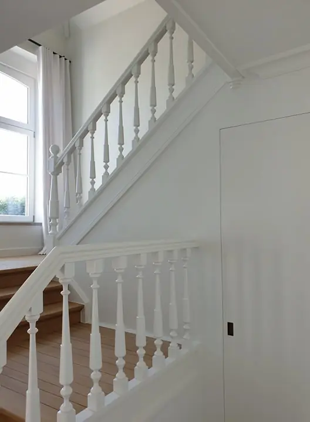
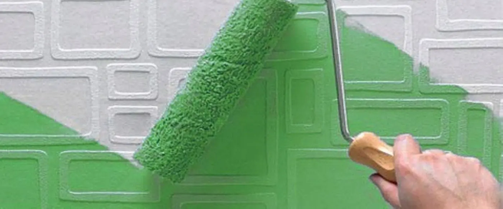

Trappenhal schilderen, hoe begin je eraan?
Als je mensen op bezoek krijgt, is het best wel fijn als ze zich al thuis voelen zodra ze in de inkomhal zijn. Een likje verf in de juiste kleur kan hier al wonderen doen. Natuurlijk is je traphal schilderen niet zo evident, zeker als bepaalde plaatsen minder toegankelijk zijn. We geven je als ervaren schildersbedrijf graag wat tips over je kleurkeuze en hoe je die moeilijke bereikbare plaatsen toch kunt schilderen.


Schilder je inkomhal in een lichte kleur
De inkomhal is in de meeste gevallen een kleine ruimte. Een witte verf of pastelkleur is dan ook aan te raden, aangezien de ruimte hierdoor groter lijkt. Vraag in de verfwinkel welke soorten witte verf ze hebben, je zal zien dat de mogelijkheden eindeloos zijn! Meestal wordt er gekozen voor een standaard muurverf of latexverf. Kalkverf is ook een optie als je een mat en decoratief effect wilt creëren. Kies in elk geval niet voor de goedkoopste verf, want die zal sneller loskomen dan een kwaliteitsverf. Het plafond van de inkomhal verf je best in hetzelfde kleur als de muur of in een paar tinten lichter. Hiervoor kan je plafondverf gebruiken. Voor bepleisterde plafonds is latexverf aan te raden, voor plafonds in hout met houten balken of voor plafondtegels dien je een speciale behandeling toe te passen. Ontdek meer tips om je plafond te schildere in onze blog specifiek over 'hoe schilder je jouw plafond in 8 stappen'.
Maak van je trap een eyecatcher
Desgewenst kan je ook je trap een nieuwe laag verf geven. Misschien heeft de tijd zijn sporen al nagelaten of heb je gewoon zin in iets nieuws. We gaven je in een eerdere blog reeds drie tips om je trap te verven, maar het allerbelangrijkste is dat je eerst je trap ontvet, schuurt en ontstoft, en vervolgens nauwkeurig afplakt. Laat je in de verfwinkel of door een schilder adviseren over de juiste primer en de beste soort verf voor jouw trap.
Een nieuwe voordeur
Past de binnenkant van je voordeur niet bij je nieuwe muren en trap? Dan kan je deze natuurlijk ook in een nieuw jasje stoppen, net zoals je binnendeuren die uitkomen in de hal. Kies best voor een lichte kleurting, zodat je geen harde stoorzenders creëert. Een witte of schelpkleurige verf zijn hier populair. Wat ook leuk kan zijn, is grijze accenten of accessoires toevoegen. Ook aardetinten passen perfect bij witte deuren. Denk bijvoorbeeld aan een wandrekje of een bijzettafeltje in het grijs of aardetinten. Mag het iets uitbundiger? Dan kunnen een groot boeket bloemen of kleuraccenten in frivole kleuren een mooi effect geven.
Hoe bereik ik moeilijk toegankelijke plaatsen?
Een traphal kan soms erg hoog zijn en niet elk plekje is even goed bereikbaar, zeker niet met een trap in de buurt. We raden ten zeerste af om een ladder op je trap te plaatsen, want zo gebeuren er ongelukken. Je hebt in principe een veilige stelling nodig om de schilderwerken goed en veilig te kunnen uitvoeren. In sommige gevallen volstaat een roller met verlengstuk. Wees in elk geval heel erg voorzichtig en laat dit bij voorkeur door een professional met het juiste materiaal uitvoeren.
Een trappenhal schilderen brengt vaak extra uitdagingen met zich mee door de hoogte, bereikbaarheid en lichtinval. Een correcte voorbereiding en een professionele uitvoering zorgen voor een strak en duurzaam eindresultaat. Tijdens een vrijblijvend plaatsbezoek bekijken we graag de mogelijkheden voor uw project. Ontdek meer over onze binnenschilderwerken
Lees ook

Keukens en keukenkasten verven doe je zo!
Is je keuken toe aan een opknapbeurt? Schilder dan je keukenkasten of volledige keuken. We geven je enkele praktische tips.
Lees meer
Kan je pvc schilderen?
Raamkozijnen of een garagepoort die verkleurd zijn door de zon? Zowel binnen- als buitenschrijnwerk in pvc kan je schilderen.
Lees meer
De voordelen van vliesbehang en waarom je het best laat hangen bij renovatiewerken!
Vliesbehang is een snelle en makkelijke oplossing om je muren te renoveren en dient als ondergrond voor de verflaag.
Lees meerEen mooi resultaat begint met een goed gesprek.
Tijdens een vrijblijvend plaatsbezoek luisteren we naar uw wensen, geven we professioneel advies en bekijken we samen de mogelijkheden voor uw schilderwerken of interieurafwerking.